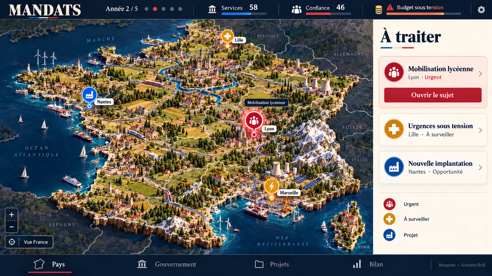
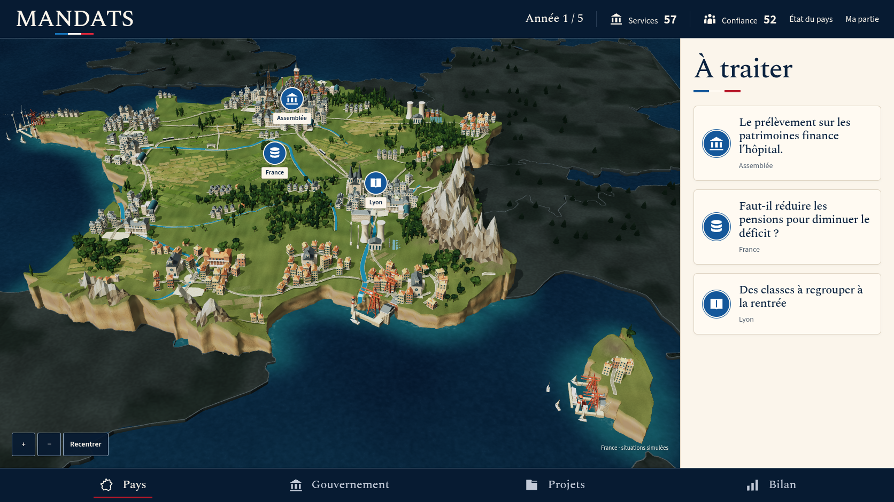

La vue du jeu utilise un navigateur à 1 672 × 941 pixels, la version 12 et le scénario 0, sans décision. Les sujets viennent de cette partie ; ils diffèrent des exemples fictifs de la maquette. Les images s’ouvrent à leur résolution originale.


Critères, captures rapprochées, entrées rejouables et limites de validation.